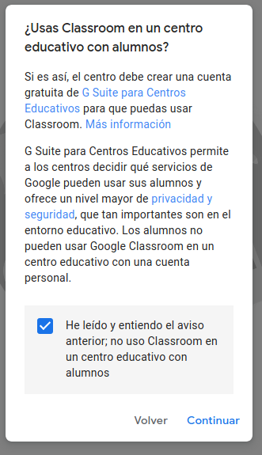

Webinar
Este manual no pretende ser una guía completa sobre el tema a tratar, mas bien una guía rápida y escueta.
Sobre ClassRoom de G Suite
Este es en el que te veo mas interesada.
Tiene algunos defectillos a tener en cuenta.
-
Precisa de una cuenta de google.
Esto que en principio no debería ser un gran problema (yo tengo una), hay personas que no la tienen y se verían obligadas (forzadas) a tenerla. -
No realiza video conferencias directamente.
Utiliza HANGOUTS y este tiene sus propias limitaciones.

Quiere decir que si lo usas en un centro educativo con sus alumnos estas incumpliendo sus condiciones.
Como vemos no tiene una herramienta dedicada para video conferencias.
Sus herramientas son las siguientes:
-
Tarea
Puedes mandarle al alumno una tarea que consta de una pregunta, es evaluable, la puedes programar para cierto día y poner fecha límite de entrega. -
Tarea de test evaluación
Igual que la anterior pero en modo test. -
Pregunta
Puedes hacer una pregunta a la clase. Digamos que es tipo foro, todo la clase puede responder y no es evaluable. -
Material
Puedes colocar material del temario en diferentes formatos, imagenes, videos, hojas de excel, etc.
Videoconferencias
HANGOUTS de G Suite
HANGOUTS es el que usarías con ClassRoom y este tiene sus propias limitaciones.
- También precisa de una cuenta de google.
- No tienes como maestro un control de la aplicación.
- Para dar clases es importante configurar ( Silenciar por defecto ) a los asistentes y en este caso puedes silenciarlos pero de uno a uno y no por defecto.
- Los alumnos tienen la misma capacidad de silenciar, bloquear pantalla o inclusibe de expulsar de la clase a cualquier otro alumno o incluso al profesor.
- No pueden conectarse mas de 10 personas a la vez.
Otro video que explica las diferencias entre HANGOUTS y HANGOUTS Meet.
El video anterior me parece un método de trabajo algo más efectivo. Pero creo que vale la pena ver este también.
Como deja entrever Gsuite no es gratuito 5.2 € por usuario al mes, y Hangouts Meet a partir de €2,499.
Este podría ser el definitivo
JITSI
Recordando lo que hablamos sobre el ClassRoom Tenemos un programa que:
-
Solo precisa que TU tengas una cuenta de google, los demas no lo necesitan.
Para (sólo si quieres) poder programar en el google calendar una sesion
y poder guardar sesiones o nombres de usuarios, grabar sesiones, etc... -
Tienes como maestro un control muy bueno de la aplicación.
-
Puedes silenciar a todos los asistentes permitiendo que puedan "levantar la mano" y
cuando veas el momento darle la oportunidad para hablar o enviar mensajes de texto por el chat. -
Los alumnos NO tienen la misma capacidad de silenciar,
bloquear pantalla e inclusive de expulsar de la clase a cualquier otro alumno o incluso al profesor. - Pueden conectarse personas sin límite.
-
La comunicación es encriptada lo que quiere decir que su nivel de seguridad es muy alto
solo la persona que conoce el nombre de mi sesion se puede conectar y nadie
que intercepte la señal por el camino puede conocer el flujo de datos real
(Quiere decir que un vecino no podria ver o escuchar la conversación). - Puedes usar una contraseña, una vez que la establezcas solo quién la conozca podrá conectarse.
-
Puedes silenciar a todos los asistentes permitiendo que puedan "levantar la mano" y
-
Se puede compartir la pantalla, ya sea la pantalla completa, una ventana completa o
inclusive una sola solapa del navegador que estas utilizando.
Lo que es muy util porque te asegura una intimidad a la hora de compartir un contenido que tengas en el mismo escritorio. -
Se puede compartir video de youtube directamente por su plataforma y
otros tipos de enlaces. -
Es muy facil modificarle la calidad de imagen para poder usarlo con personas que tengan un acceso a internet mas limitado.
No es muy aconsejable abusar de ello, porque pierde demasiada resolución y y no es bueno para una buena comunicación
pero a veces es necesario. -
NO precisa de instalación de software alguno con conectarse por la pagina web es suficiente.
No obstante, tiene programas nativos para todos los sistemas operativos del mundo.
A nivil del profesorado aconsejo instalar el programa nativo y acceder con la cuenta de google,
de esta forma tendremos acceso ilimitado a todas sus herramientas de una forma mas cómoda,
para instalarlo accedemos a su pagina de descarga y descargamos su version estable mas reciente.
Creacion de tareas
Como vimos en ClassRoom, la finalidad de este no es otra que la de realizar tareas evaluativas para el alumnado.
ClassRoom es una aplicación web que a su vez proviene de una suite de Google llamada G Suite, eleborado con el fin de tener organizadas una serie de aplicaciones para el entorno docente. Al ver que classRoom tiene sus limitaciones y ya que hemos encontrado una alternetiva muy eficiente a Hangouts, el Jitsi. Vamos a ver si encontramos una alternativa real a ClassRoom. Osease para la creación de tareas evaluables.
Kahoot!
La alternativa mas común o conocida es el Kahoot!.
A pesar de ser el mas utilizado, de hecho habrás observado, que lo usan docentes que tienen como herramienta base el ClassRoom, pero tiene muchas limitaciones.
- Es de pago, aunque lo puedes usar de forma gratuita, limita bastante su uso.
- No puedes crear carpetas para organizar tus tareas. Solo premium.
- Solo te permite 10 alumnos.
- Y muchas otras limitaciones del plan basico.
-
Entre todas las limitaciones la mas importante desde mi umilde opinión es la siguiente,
los alumnos no pueden ver las preguntas en sus dispositivos, solo las respuestas.
Esto implica que exije de un proyector o algo similar en el aula para su uso
y que no lo puedes enviar como tarea para hacer en casa.
Quizalize
Es otra alternativa, pero tampoco me a llamado mucho la atención.
Tecuento por encima:
Contras:
- Está en inglés.
- Es de pago con todas las limitaciones que ello conlleva.
- Tiene otros metodos diferentes que para algún trabajo en concreto puede que nos sea útil. Por lo tanto aconsejo darle una oportunidad y hecharle un vistazo.
Quizizz
Una alternativa de lo mas interesante.
Como hemos visto es sencilla de utilizar y tiene muchos detalles a su favor.
- Es totalmente gratuito y está en castellano.
- Lo mas importante, los alumnos no necesitan tener ningún tipo de cuenta.
- Al maestro se le aconseja crearse una cuenta para poder tener sus trabajos guardado y tener un seguimiento de sus alumnos.
- Se puede Jugar en vivo muy util para exsamen de clase, porque no comienza hasta que el maestro pulse el botón Empezar
- Se puede programar como deberes para casa.
- Puedes crear tantas tareas como quieras y editarlas con graficos, inclusibe imprimirlas tanto para el profesor, con las respuestas, como para el alumnado. Así podremos hacer la tarea sin internet.
- Usa el concepto de memes, estos son dibujitos animados cada vez qu responden una preguna o terminan el examen, estos tienen una respuesta coherente con el resultado.
- Pueden tener musica de fondo.
- Puedes copiar las tareas de otros profesores y modificarlas como mas te convenga, muy util para ver como otros compañeros enfocan la asignatura y nos puede dar muchas ideas.
- Se pueden revisar todos los resultados de manera muy clara, guardarlos como excel e imprimirlos.
Otras aplicaciones de interés
Pizarras
Te explica como usar y compartir una pizarra. Nota he cambiado este video por otro mejor.
Yo optaria por Ardesia. Que lo vimos en el video anterior.
Aunque estos programas no se usen con tanta frecuencia, Sí que es verdad, que nos puede sacar de un apuro en más de una ocasión, por lo tanto no solo tenerlo instalado, si no que también es importante darle uso de vez en cuando para no olvidarnos de cómo funciona, ya que el día que realmente nos haga falta, seguramente no tengamos tiempo o no sea el momento de estar averiguando como acceder a él.
Como habéis visto en el vídeo su uso es muy sencillo y cómodo.
La instalación es bastante sencilla, decargais el ejecutable en este enlace Ardesia, la version para Windows es una que acaba en ".exe" y la instaláis.
Aplicaciones avanzadas
OBS Studio
OBS Studio nos permite editar la imagen que recibimos de la cámara y los resultados los puede emitir como si fuera una cámara virtual.
Quiere decir que al elegir la cámara veríamos que tenemos otra cámara nueva, esta es la que ha virtualizado el OBS.
Es el programa más popular entre los youtubers, gratuito y open-source.
Puede parecer complicado en un principio, pero en realidad con dos truquitos consigues que tus emisiones queden muy profesionales.
Otros videos de interés
Como hablar a la camara
Para Ubuntu
Instalar Jitsi en Ubuntu 18.04 con Docker y Let’s Encrypt. Se puede usar el OBS usando con script virtual-cam.